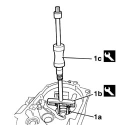
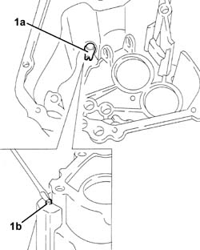
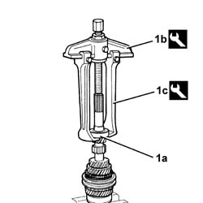
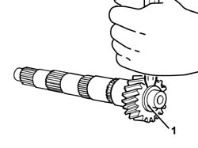
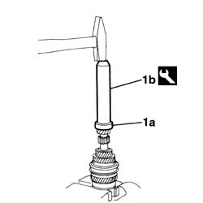
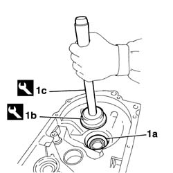

2110B32 manual gearbox (5 speed) with differential - dismantle and rebuild - wash and check parts - replace synchronisers, inner controls, gears, shafts and bearings
- Path
- Procedures > 21 GEARBOX UNIT > 2110 MANUAL GEARBOX WITH DIFFERENTIAL > 2110B manual gearbox with differential gears and synchronisers > 2110B32 manual gearbox (5 speed) with differential - dismantle and rebuild - wash and check parts - replace synchronisers, inner controls, gears, shafts and bearings
- Kind
- repair procedure (removal / refitting; the operation number is the code)
- Applies to
- all engines; all production periods
- Interactive page
- https://sloeber94.github.io/elrnDB-fDbl/en/#/2585315
Applies to: all engines; all production periods
1. Remove the differential support bearing outer races (1a) using the tools (1b) and (1c).
 | Name | Country |
|---|---|---|
1b | Extractor | 1.840.005.009 |
| Name | Country |
|---|---|---|
1c | Counter weight | 1.840.007.000 |

Applies to: all engines; all production periods
1. Remove the guide pin for fitting reverse gear (1a) after having removed the outer staking (1b).

Applies to: all engines; all production periods
Move the main shaft outer bearing as far away as necessary, using a special chisel on the inner race.
1. Remove the main shaft front bearing (1), using tools (1b) and (1c).
| Name | Country |
|---|---|---|
1b | Extractor | 1.840.005.001 |
| Name | Country |
|---|---|---|
1c | Clamps | 1.840.005.103 |

Applies to: all engines; all production periods
1. Move the layshaft front bearing inner race as far away as necessary, using a special chisel.
Remove the layshaft front bearing inner race using the tools.
| Name | Country |
|---|---|---|
- | Extractor | 1.840.005.001 |
| Name | Country |
|---|---|---|
- | Clamps | 1.840.005.103 |

Applies to: all engines; all production periods
1. Fit the new main shaft front bearing (1a) using the tool (1b).
| Name | Country |
|---|---|---|
1b | Drift | 1.870.448.000 |

Applies to: all engines; all production periods
Fit the inner race for the new layshaft front bearing using the tool.
| Name | Country |
|---|---|---|
- | Drift | 1.870.448.000 |
Fit the guide pin for fitting reverse gear and fix through external staking.
1. Fit the differential support bearing outer races (1a) using the tools (1b) and (1c).
| Name | Country |
|---|---|---|
1b | Fitting tool | 1.874.541.000 |
| Name | Country |
|---|---|---|
1c | Grip | 1.870.007.000 |

Applies to: all engines; all production periods